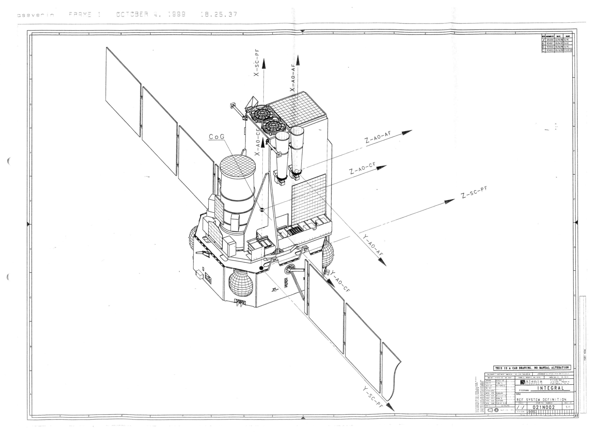
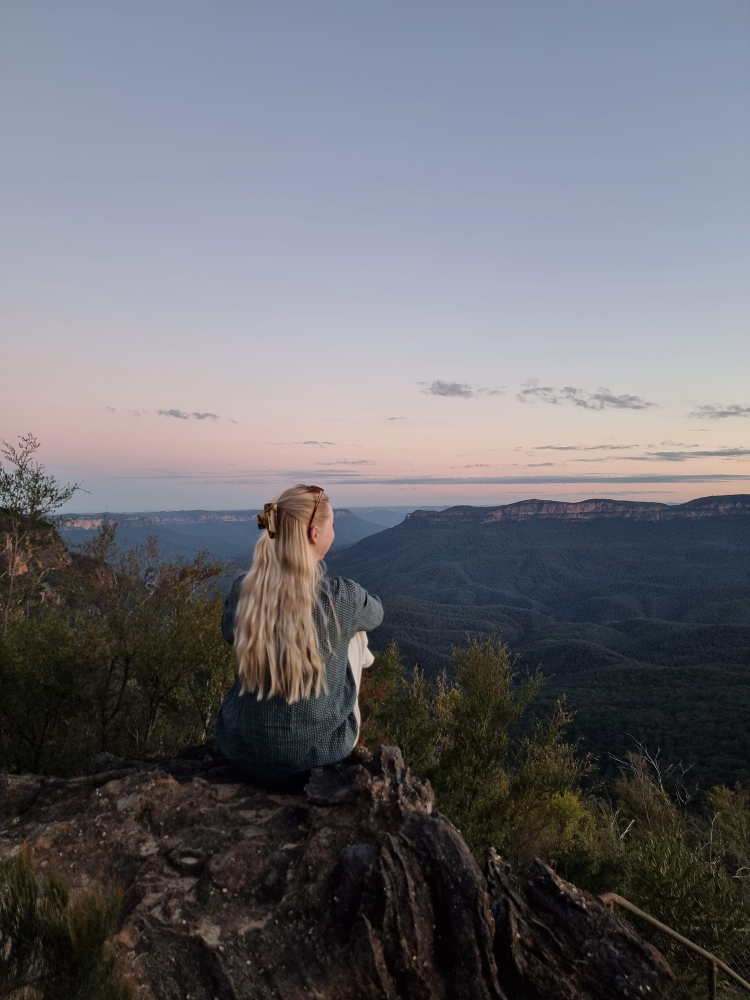
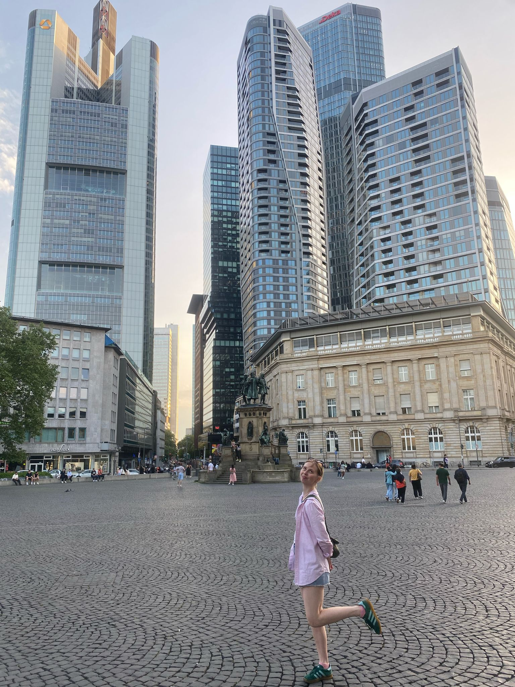
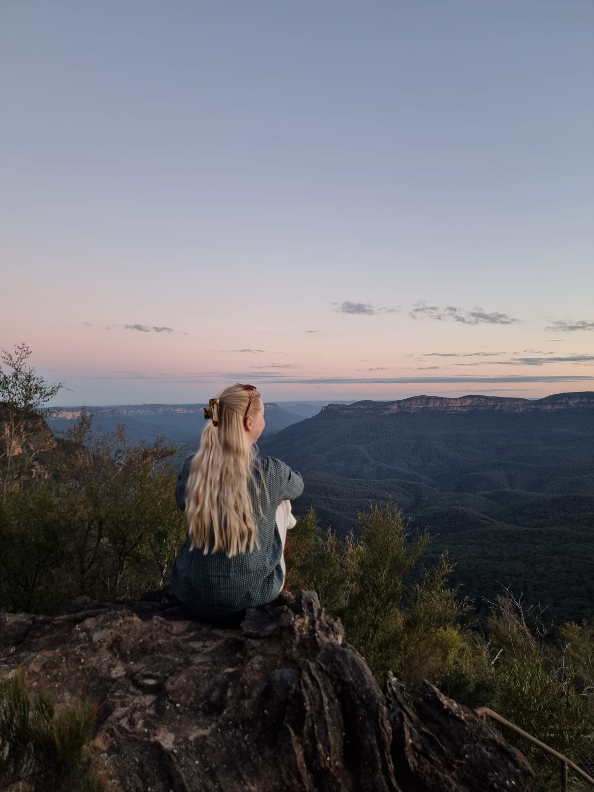
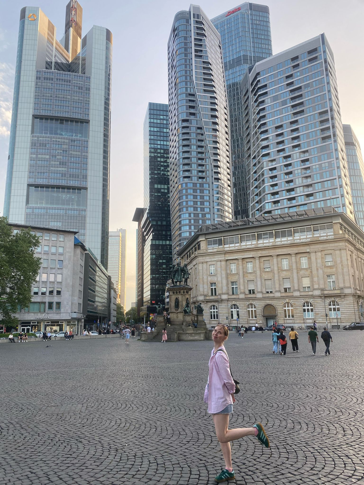
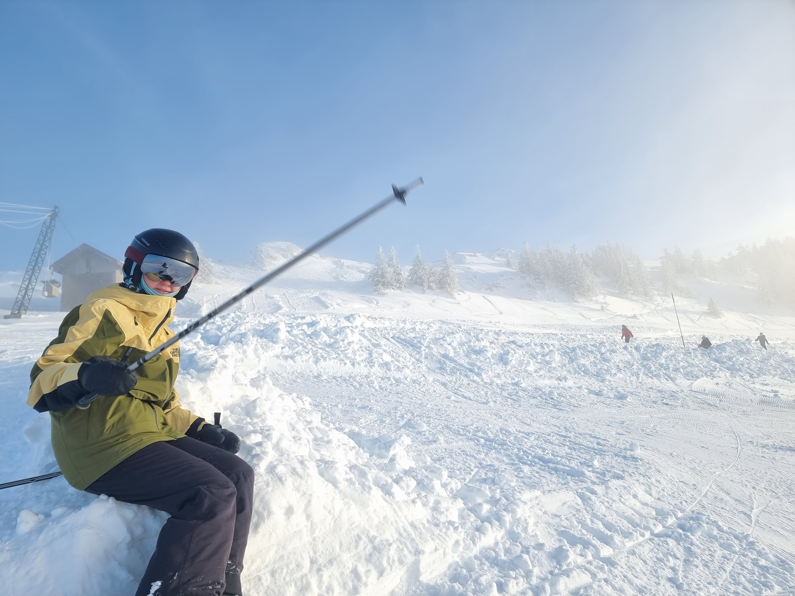
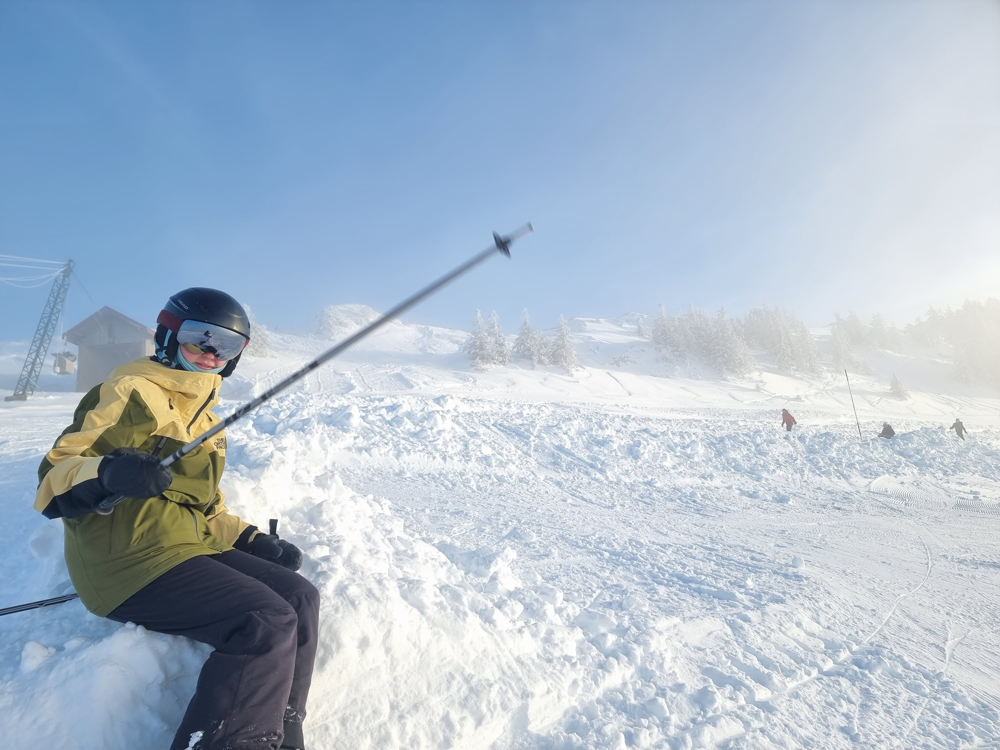

Need answers, not essays? Ask my chatbot instead 👇
Skills
Machine Learning
3 years of experience in machine-, deep- and reinforcement learning for classification, nlp and computer vision tasks. Proficient in libraries such as Pandas, Sklearn, Tensorflow.
Model Finetuning
Skilled in finetuning foundation and interact models on domain-specific tasks. Enhancement of model performance through hyperparameter optimisation and transfer learning techniques.
Data Science
5+ years of experience building data pipelines ETL in Python and SQL. Data-visualisation in frontend as actionable insights.
Projects
The K-NN Chain algorithm is a novel approach to make hierarchical agglomerative clustering more scalable. By making use of dynamic distance computation, this method manages to reduce memory complexity exponentially and time complexity in a majority of cases.
Currently audio deepfake detection methods focus on the acoustic signal and learn to spot artifacts produced by specific deepfake generators. This makes them inherently brittle when deployed to real-world datasets. This project focuses therefore on leveraging both speech and text models, in order to incorporate both acoustic anomalies and a context for a given speaker, which are then fed into a classifier fine-tuned for deepfake detection.
Generative Spacecraft Design
Development of a data corpus to ameliorate the response capabilities of existing NLP models. Using the provided data, the model is then able to answer inquiries regarding suitable spacecraft instruments based on a given space-mission statement.
Curriculum Vitae
Experience
DATAWAVE | Freelance Data ScientistMay 2024 onw. | Frankfurt am Main, Germany
- Collaborating with early-stage startup to design and deploy cloud-based infrastructure for scalable data processing.
- Developed automated pipelines for real-time data acquisition and integration.
- Conducted exploratory data analysis to derive actionable insights.
- Python
EUROPEAN SPACE AGENCY | Internship in Artificial Intelligence
Nov 2024 ‐ Apr 2025 | Cologne, Germany
- Designed, fine-tuned, and deployed a transformer model for ground-to-space communication, enabling real-time decoding of noisy, multilingual signal data.
- Integrated model into ESA ops workflows, collaborating across engineering and mission teams to ensure mission-critical reliability.
- Explored agentic AI crew companions, including scoping technical gaps and prototyping agent-based system enhancements.
- Python, JavaScript, HTML, CSS
TÉLÉCOM PARIS | Research Internship in Machine Learning
Apr 2024 ‐ Oct 2024 | Paris, France
- Analysed the inefficiencies of the Nearest Neighbour Chain clustering algorithm.
- Designed the K-Nearest Neighbour Chain algorithm, significantly improving time & space complexity.
- Built and tested synthetic datasets for method benchmarking and generalisation checks.
- C++, Python, Cython
PROCESSAND | Data Scientist
Nov 2020 ‐ Dec 2022 | Munich, Germany
- Created ETL systems and modular data pipelines for enterprise analytics.
- Automated recurring model-based processes with over €400k annual efficiency gains.
- Collaborated across product and engineering to tune real-time dashboards and ML-driven triggers.
- SQL, Python, PQL
SIF JAKOBS JEWELLERY | German Digital Online Coordinator
Aug 2018 - Dec 2019 | Copenhagen, Denmark
- Managed the implementation of social media marketing in 5 countries.
- Translations in Danish, German, English and French.
EUROPEAN CENTRAL BANK | Intern in the Directorate General Information Systems
Jul 2018 | Frankfurt, Germany
- Prototyped human-centric design for new information system.
NORDEA BANK GERMANY | Working Student
Sep 2015 - Jun 2017 | Frankfurt, Germany
Education
TECHNICAL UNIVERSITY OF MUNICH | Double Degree in M.Sc. Computer Science | GPA 3.4Sep 2022 – Aug 2025 | Munich, Germany
- Foundation Models, Computer Vision, Quantum Computing, Cloud Computing
- Generative Spacecraft Design, avoiding hallucinations using RAG
INSTITUT POLYTECHNIQUE DE PARIS | Double Degree in M.Sc. Data and AI | GPA 3.96
Sep 2023 – Dec 2024 | Paris, France
- Machine Learning, Deep Learning, Reinforcement Learning, Natural Language Processing
- Defence against the Deepfake Arts; News Headline Generation
LUDWIG‐MAXIMILIANS‐UNIVERSITY | Student in B.Sc. Computer Science | GPA 3.4
Oct 2020 – Aug 2022 | Munich, Germany
UNIVERSITY OF COPENHAGEN | Degree in B.A. Communication and IT
Exchange at University of California, San Diego | GPA 3.8
Sep 2017 – Jun 2020 | Copenhagen, Denmark
Skills
CS
Large Language Models, Multimodal Models, Vision Models, Signal Processing, PEFT, RAG, ETL, Pair Programming
Soft-skills
Initiative-taker, Fast Learning, Team Player
Programming
5+ years Python, SQL, R
2 years JS, CSS, HTML
1 year C++, Java
Libraries & Frameworks
PyTorch, Huggingface, Qiskit, Sklearn, Tensorflow, LangChain, SciPy, Pandas, Pinecone, Git, Tableau, Celonis, WEKA
Languages
Native
English, German, Danish
Foreign
French C1, Spanish A2
Volunteering
Bureau des élèves IP Paris
Sep 2023 - Oct 2024
Student Cafe ‐ Studenterhuset
Feb 2019 ‐ Nov 2019
Mentor for international Students ‐ QA Programme
Dec 2017 ‐ Dec 2018
Interests and hobbies
Ballet
I have been dancing ballet since I was about 6 years old. It has been an integral part of my life; ballet gives me a sort of freedom of expression, and it has been a constant throughout my entire life. As an adult I still take classes, and try to improve my technique. I also dance other dances: contemporary, tango, flamenco, jazz.
Skiing
I normally ski every winter, normally in Austria, and I love it for the sport, the outdoor, the views, and the apres-ski-bars. I have skied since I was a young child. It would be my dream to go skiing in Japan, and enjoy the fantastic weather, scenery and bouncy snow!
Brain-workouts!
Whether it is finishing a Sudoku (faster than 99% on Sudoku.com), solving a rubik's cube (can solve in about 2 mins), or playing one or two rounds of chess with friends (though I absolutely am a beginner)!
Space
I find space absolutely fascinating, cool and humbling. I have worked for a Generative AI project for the chair for Pico and Nano Satellites at TUM and I have worked at the European Space Agency to integrate AI in their pipeline.
Art
I work on the odd tufting project and designing and sewing my own dresses. Other than that I highly appreciate artwork. I hope to one day open a non-profit art gallery, in attempt to incorporate art with the younger generation.
Politics and democracy
I enjoy following politics in the EU and internationally. I strongly align with european and democratic values. I would be highly motivated to continue creating AI, which could also contribute to society in some way!
Feminism
Despite progress toward gender equality, meaningful differences between the sexes still persist in various domains, particularly STEM. I firmly believe that women in these fields should be actively supported, recognised, and empowered. My commitment lies in fostering equal opportunity and upholding the principles of fairness and merit for all.
Travelling
 





 
